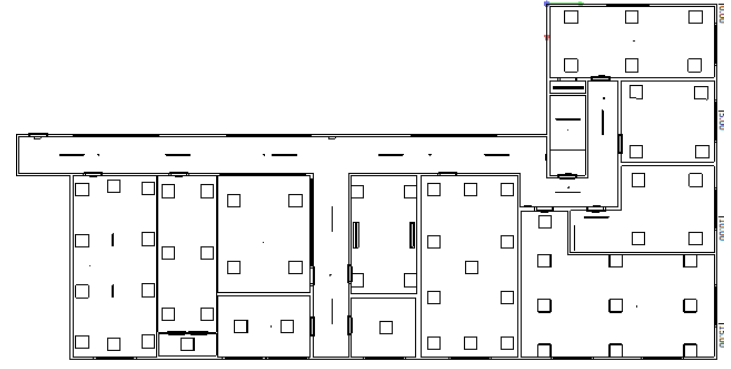
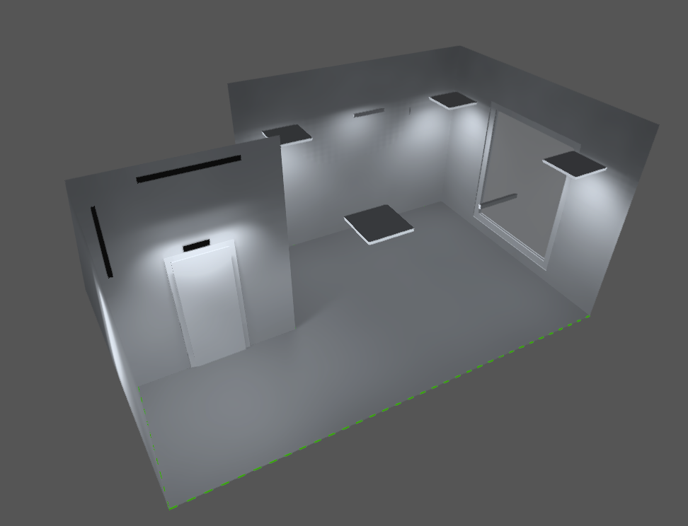

Modern Lighting Design: AS/NZS 1680 Compliance Redesign
This project involved evaluating and redesigning the lighting systems of two existing office buildings for a fictional client, Alpha Design Limited, in collaboration with Legrand New Zealand. The existing fluorescent installation was assessed against AS/NZS 1680, then replaced with an LED design across both buildings and a new covered carpark that met the illuminance, uniformity, and glare criteria set out in the assignment brief, along with emergency lighting to NZBC clauses F6 and F8.
The project was completed as part of ELECTENG 310 with a five-person team (Team 14). The redesign cut total connected load by 74% and achieved a payback period of around 6 years, well within the client's 10-year requirement.


Project Overview
The existing fluorescent lighting across both buildings had a total connected load of 25,428 W, a power density of 21.68 W/m² (well above the 7-9 W/m² recommended for offices), and was found to fail uniformity and glare requirements in multiple corridors and CAD rooms. The brief called for an LED redesign assessed against AS/NZS 1680, emergency lighting to NZBC F6/F8, and a payback period under 10 years, modelled entirely in DIALux Evo. To keep the assignment scope manageable, the brief specified a simplified subset of the standard's criteria: Working plane height was fixed at 0.7m for all task areas (rather than the 0.85m specified for bench-height tasks), and rooms requiring high-focus tasks such as CAD rooms and offices were assessed against the 0.5 minimum uniformity tier rather than the stricter 0.7 minimum AS/NZS 1680 specifies for that task type. Circulation spaces still used the correct 0.3 minimum. The design below meets those specified criteria. It wasn't checked against every clause of AS/NZS 1680.
Ground floor of Building A was redesigned using ETAP luminaires, the first floor using Lena Lighting fittings, with a mix of recessed and surface-mounted fixtures depending on ceiling type and IP66 fittings on exposed balconies. Building B's ground floor also used Lena Lighting fittings across its circulation, office, and wet-area spaces. A new carpark lighting system was designed from scratch, including tiered entrance illuminance zones with DALI day/night dimming control.
My Contributions: Building B First Floor
I was responsible for the lighting redesign of Building B's first floor, which presented a distinct set of constraints compared to the ground floors below: a 3.3m exposed concrete slab ceiling ruled out recessed fittings entirely, so every luminaire had to be surface mounted or suspended.
Fitting Selection and Suspension Strategy
Circulation spaces used the Baris 40 LED N VD, a fitting purpose-built for traffic zones under AS/NZS 1680.2.1, with the stair unit positioned toward the upper corner to reduce glare for ascending occupants and improve tread contrast. The director's room, offices, meeting rooms, CAD room, and conference room used the Terra 2 LED ZW multiwatt fitting, suspended 500mm below the concrete slab to an effective height of 2.8m. The 500mm drop was a deliberate choice to reduce the "cave effect" from the exposed ceiling and improve ceiling luminance and visual comfort. The multiwatt feature let me tune output per room size without changing fitting type, keeping the luminaire schedule consistent across the floor.
Resolving Uniformity and Glare Failures
Several rooms needed targeted fixes beyond the standard layout:
- Meeting room 208 required two additional Terra 2 LED Long Z fittings along the presentation wall to bring uniformity and wall illuminance up to AS/NZS 1680.2.2.
- Office 205's L-shaped layout created cold spots in an alcove. I resolved this by adding a Baris 40 LED UGR Plus N with a 70D wide beam angle in the bend, chosen over the narrower 60D option to maximise spread across the confined space.
- Conference room 213 failed the Uo ≥ 0.5 uniformity requirement, so I added two supplementary Baris 40 VD surface-mounted fittings; surface mounting these also had the useful side effect of reducing UGR from 20 to 18.7.
Wet Areas and Breakout Spaces
The kitchen and toilets used the Compact LED EVO P ZK for its IP44 moisture rating. I specified the kitchen in the 830 (3000K) variant for a warmer, more relaxed breakout atmosphere and surface mounted it for ease of cleaning, while the toilets used the 840 (4000K) variant for a cleaner, more clinical appearance.
Design Verification
Every room on the floor was checked in DIALux Evo against the brief's assessment criteria from AS/NZS 1680.2.2: average maintained illuminance, overall room uniformity, and UGR. The final results across the floor:
- All 15 spaces met the specified illuminance and uniformity targets, including the two rooms requiring supplementary fittings
- UGR held at or below 19 across every task room, ranging from 16.3 (office 212) to 18.7 (office 205 and conference room 213)
- Maintenance factors calculated per room using L70B50 lifespan data and AS/NZS 1680.4
As noted above, these results reflect the brief's specified scope, not a full audit against every AS/NZS 1680 clause.
Results
Across both buildings, the redesign reduced total connected load from 25,428 W to 6,593.9 W, cutting annual CO₂ emissions from 20.98 tonnes to 5.44 tonnes, with a capital cost of $83,400 paid back in approximately 6 years.
Additional Resources
For the full technical design process, compliance tables, calculations, and reflected ceiling plans, the complete project report is available below.
View Full Report